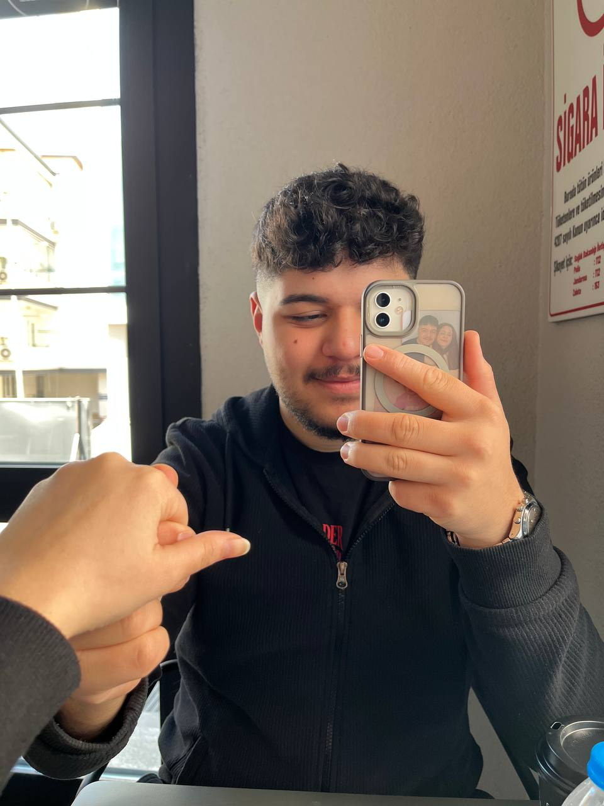
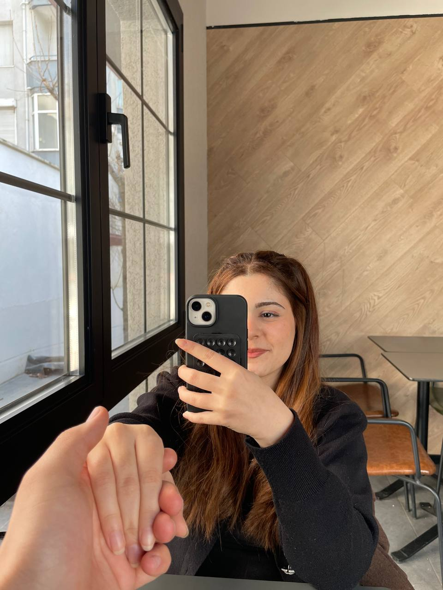
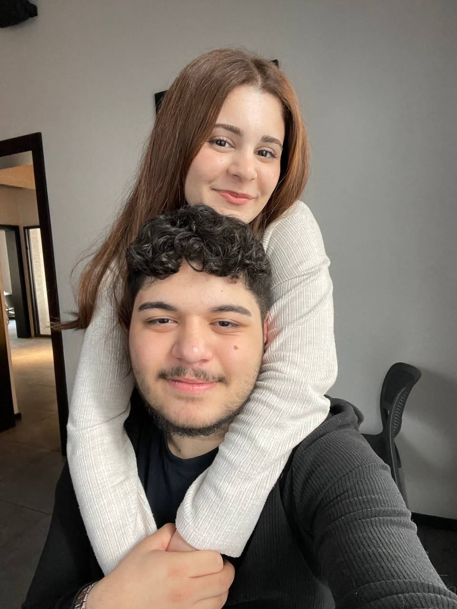
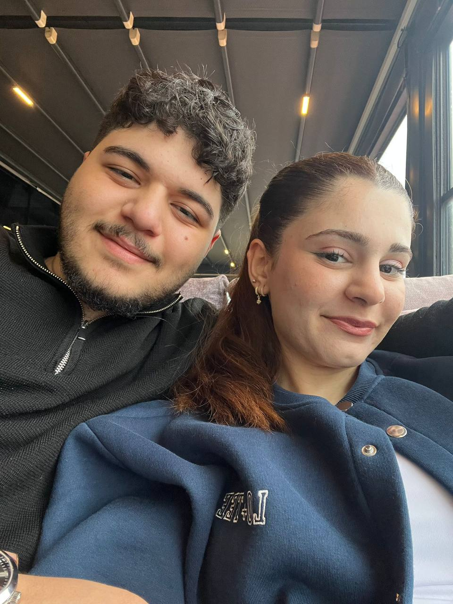
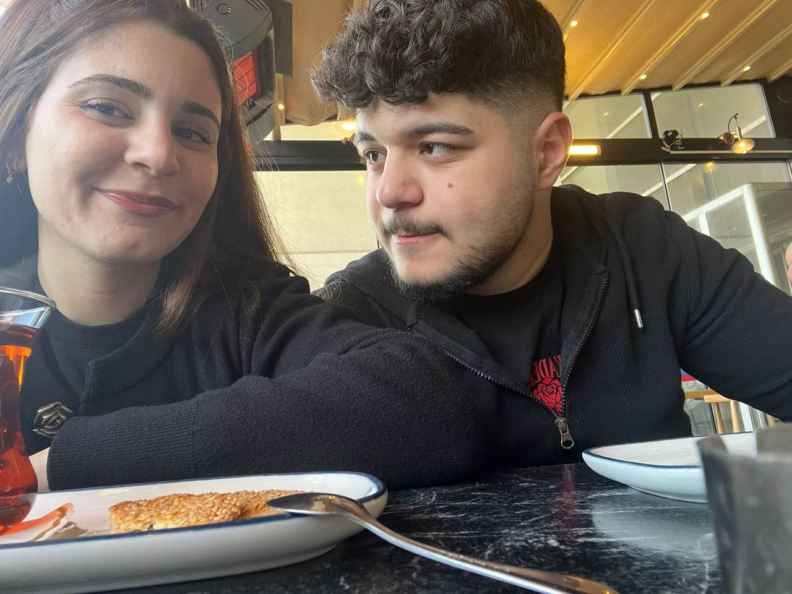
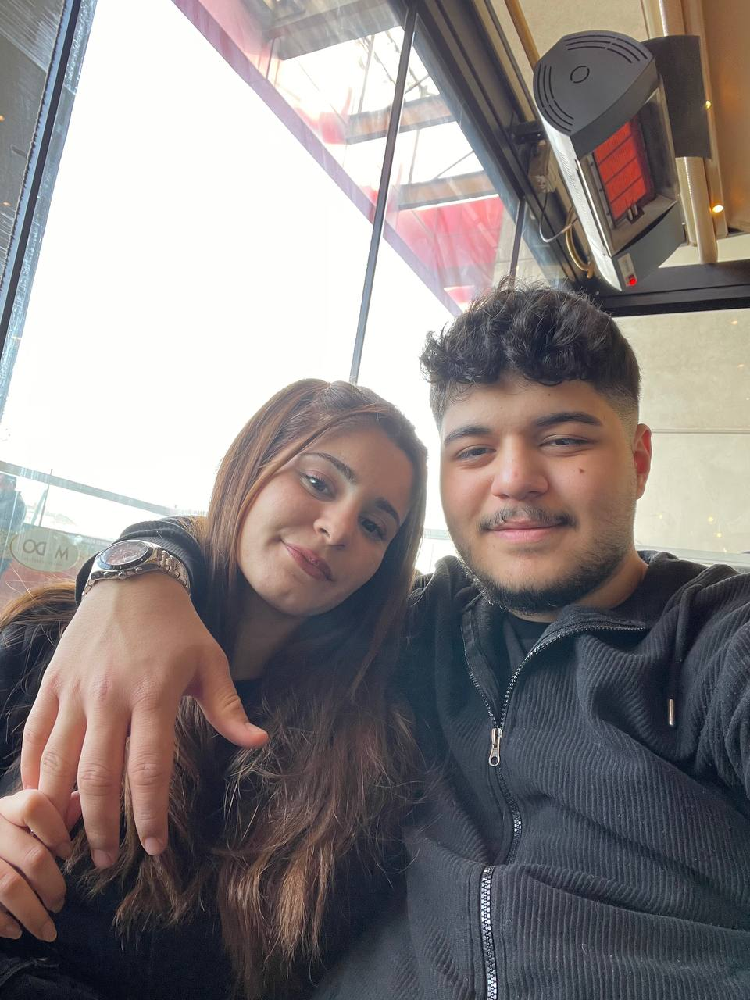
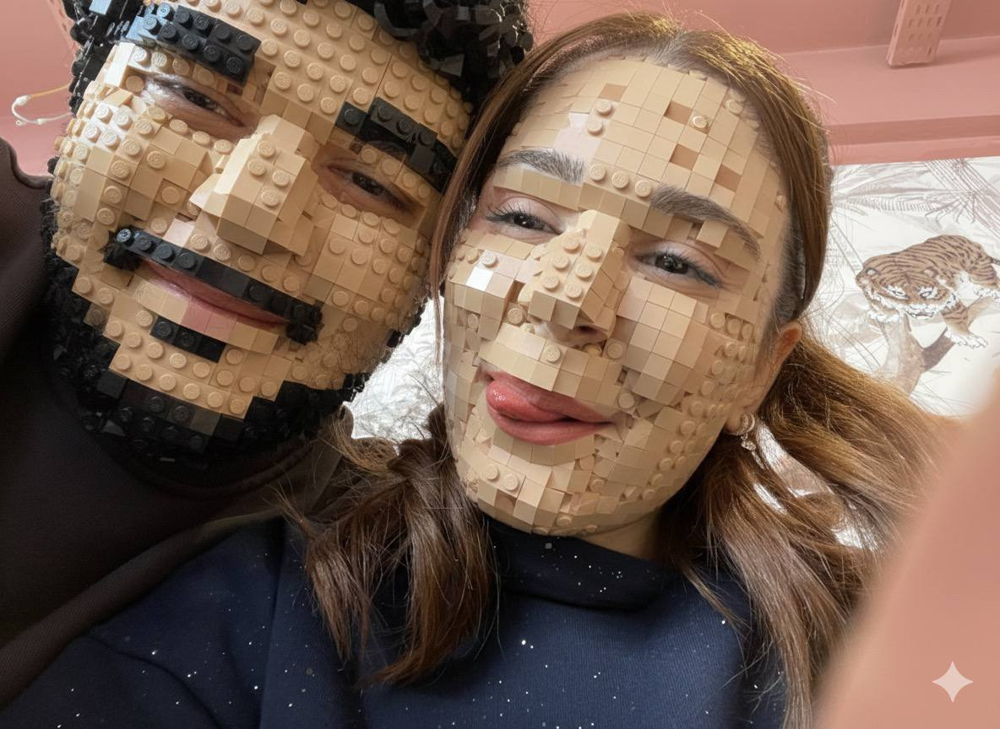
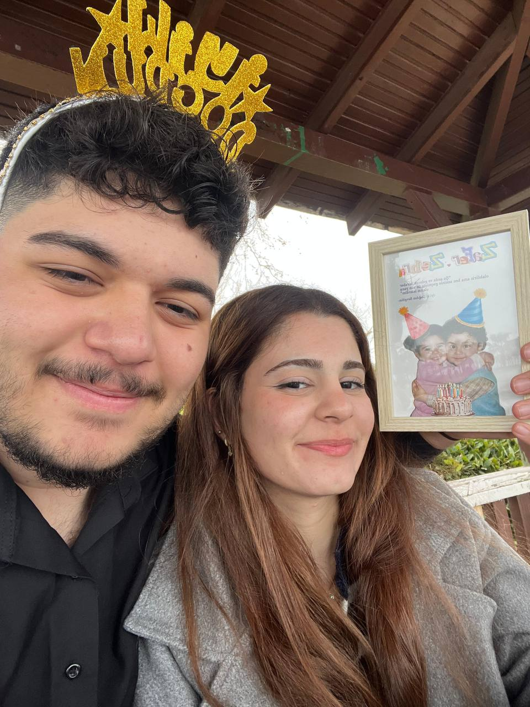
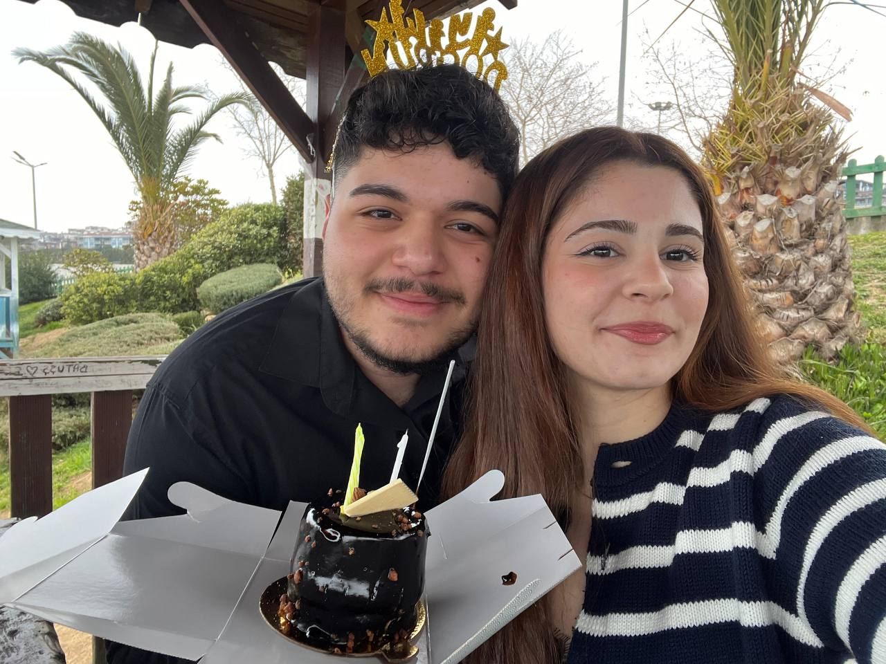
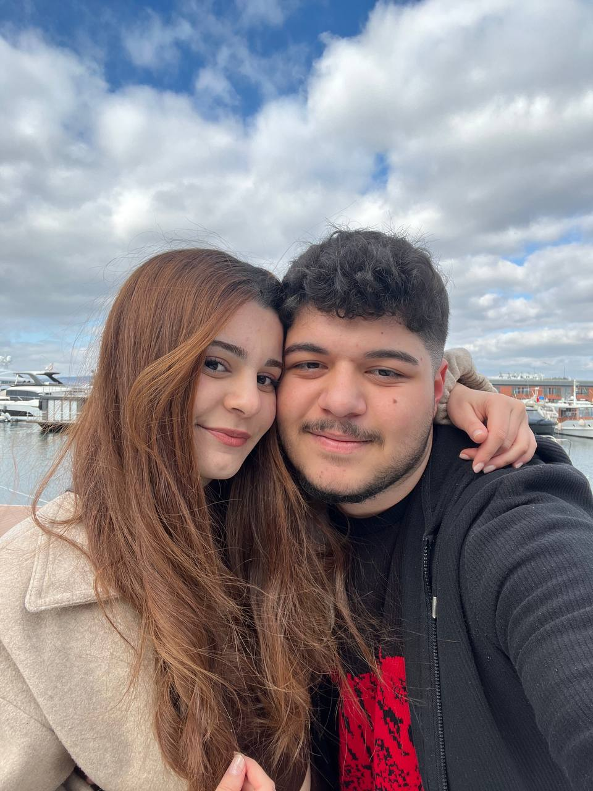

Zehra'm & Biz
Seni Sevme Nedenlerim
1. 4 Haziran'da hayatıma girişin.
2. İlk "Merhaba" dediğin anki ses tonun.
3. 14 Haziran'da "Biz" olmanın gururu.
4. Seni ilk gördüğümde kalbimin ritminin değişmesi.
5. İlk fotoğrafımıza her baktığımda hissettiğim o ilk heyecan.
6. Kaderin bizi 400 kilometreye rağmen birleştirmesi.
7. İlk uzun konuşmamızın hiç bitmesini istemeyişim.
8. Bakışlarındaki o tarif edilemez derinlik.
9. Kimse yokken yanımda olan tek kişi olman.
10. Çocuksu neşen.
11. Olgun duruşun.
12. Adaletli ruhun.
13. Merhametli kalbin.
14. Kimseye benzemeyen o eşsiz karakterin.
15. Zekanla beni her seferinde şaşırtman.
16. Güçlü duruşunla bana ilham vermen.
17. Dürüstlüğün.
18. Sadakatin.
19. Kimsenin görmediği detayları fark etmen.
20. Alçakgönüllülüğün.
21. Dünyanın en güzel manzarası: Gülüşün.
22. Gözlerinin içindeki o parıltı.
23. Güldüğünde kısılan gözlerin.
24. Kahkahanın kulaklarımdaki en güzel melodi olması.
25. Sadece bana özel olan o masum gülümsemen.
26. Bakışlarındaki huzur verici güç.
27. Gözlerinin rengindeki derin anlam.
28. Her güldüğünde içimde açan çiçekler.
29. Beni dünyanın en şanslı adamı hissettirmen.
30. Yanındayken kendimi güvende hissetmem.
31. En saçma halimle bile beni sevmen.
32. Yaralarımı iyileştiren şefkatin.
33. Bana olan sonsuz güvenin.
34. Beni her halimle kabul etmen.
35. Seninleyken zamanın durması.
36. Kalbimdeki o bitmek bilmeyen heyecan.
37. Varlığınla hayatıma anlam katman.
38. Bana "iyi ki" dedirten tek kişi olman.
39. Saçlarının kokusu.
40. Ellerinin ellerime tam oturması.
41. Uykulu ses tonun.
42. Sinirlendiğinde bile çok tatlı olman.
43. En sevdiğin kıyafetin içindeki halin.
44. Yemek yerkenki mutluluğun.
45. Heyecanlanınca hızlı hızlı konuşman.
46. Bana ismimle seslenişin.
47. Mesaj attığında ekrana bakıp istemsizce gülmem.
48. Fotoğraflarındaki o doğal güzelliğin.
49. Mesafelerin aşkımıza engel olamayışı.
50. Ekrandan bile olsa bana sarılabilmen.
51. Her kavuşma anımızın kutsallığı.
52. Uzaklık anlarındaki o buruk ama umutlu bekleyiş.
53. Sesini duyduğum an tüm yorgunluğumun geçmesi.
54. Uzaklarda olsan da kalbimin tam içinde yaşaman.
55. Sabrınla bana güç vermen.
56. Seninle kurduğum tüm hayallerin güzelliği.
57. İleride aynı çatı altında uyanma fikri.
58. Birlikte gideceğimiz şehirlerin hayali.
59. Yaşlandığımızda bile elini tutacak olma ihtimalim.
60. Seninle her şeye "varım" dedirtmen.
61. Hayatımın geri kalanında sadece seni istemem.
62. Ruhumun huzuru olman.
63. Karanlığımdaki ışığım olman.
64. Aldığım en güzel nefes olman.
65. Her gün seni sevmek için yeni bir sebep vermen.
66. Dinlediğim her şarkıda seni bulmam.
67. Okuduğum şiirlerin hep seni anlatması.
68. Gökyüzündeki en parlak yıldızım olman.
69. Vazgeçemediğim en güzel alışkanlığım olman.
70. Kalbimin tek ve gerçek sahibi olman.
71. Uykudan önceki son güzel düşüncem.
72. Uyandığımdaki ilk gülümseme sebebim.
73. Tüm dualarımın en güzel karşılığı olman.
74. Hayatımın en güzel tesadüfü.
75. Umudumun hiç bitmeyen kaynağı.
76. Sadece benim "Zehra'm" olman.
77. Bana gerçek aşkın ne olduğunu öğretmen.
78. Kelimelerin yetmediği o özel anlarımız.
79. Varlığının içimi ısıtan sıcaklığı.
80. Sesindeki o dinlendirici huzur.
81. İnce düşünceli ve kibar olman.
82. Ne olursa olsun her zaman arkamda durman.
83. En büyük hatalarımı bile sevginle güzelleştirmen.
84. Hayata sıkı sıkı tutunma sebebim olman.
85. Başarısız olduğumda bile bana herkesten çok inanman.
86. En yorgun olduğum anlarda bile seninle konuşunca yeniden doğmuş gibi hissetmem.
87. Başarılarımda yanımda olup, mutluluğumu benden daha çok kutlaman.
88. Sıradan bir günü bile sadece varlığınla unutulmaz bir anıya dönüştürebilmen.
89. Okul stresini bir mesajınla unutturabilmen.
90. Gelecekte kuracağımız o evin hayali kokusu.
91. Birlikte içeceğimiz sabah kahvelerinin heyecanı.
92. Seninle sessizce oturmanın bile dünyanın en huzurlu işi olması.
93. En zor sınavlarımdan bile daha öncelikli olman.
94. Kalbimin en gizli şifresi olman.
95. Her bakışında beni kendine yeniden aşık etmen.
96. Bana olan bitmek bilmeyen ilgin ve alakan.
97. Beklemediğim anlarda yaptığın küçük sürprizlerin.
98. Sayende kendime olan güvenimin artması.
99. Senin olduğun her yerin benim için "ev" olması.
100. En iyi yol arkadaşım ve sırdaşım olman.
101. Bana bakarken dünyayı unutman.
102. Sesindeki o şefkatli tını.
103. Zorluklara karşı birlikte göğüs germemiz.
104. Hayallerime ortak olman.
105. Küçük bir mesajınla günümü aydınlatman.
106. Seninleyken hiçbir şeyden korkmamam.
107. Sabrının güzelliği.
108. Kalbindeki sonsuz iyilik.
109. Her zaman doğruyu söylemen.
110. Bana kattığın tüm güzellikler.
111. Bir bakışınla tüm dünyayı karşıma alabilecek cesareti bana vermen.
112. Hamarat olman.
113. Sesinin her notasını sevmem.
114. Varlığının verdiği o tarifsiz güven.
115. Seninle her şeyi konuşabilmem.
116. Bakışlarındaki o masumiyet.
117. Elimi tuttuğundaki o sıcaklık.
118. Şakalarıma olan sabrın.
119. Benimle gülmen.
120. Benimle hayal kurman.
121. Sadece ikimizin bildiği o kelimeler.
122. Aramızdaki o özel espri anlayışı.
123. Fırtıko olman.
124. Birbirimizi kelimeler olmadan anlayabilmemiz.
125. Kalplerimizin aynı ritimde atması.
126. Seninle geçen her dakikanın değerini bilmen.
127. Bana olan bağlılığın.
128. Hayatımdaki en değerli varlık olman.
129. Kalbimin en derin köşesindeki yerin.
130. Seni düşünmenin bile içimi ısıtması.
131. Bana verdiğin o tarifsiz mutluluk.
132. Her kavgamızdan sonra daha sıkı bağlanmamız.
133. Affedici ve anlayışlı olman.
134. Benim için yaptıklarını asla unutmaman.
135. Seninle her şeyin daha renkli olması.
136. Dünyayı senin gözlerinden görmeyi sevmem.
137. Bana verdiğin o sonsuz enerji.
138. En kötü günümde bile yanımda hissetmem.
139. Sesinin huzur verici melodisi.
140. Bakışlarındaki o bitmeyen şefkat.
141. Saçının her teli için.
142. Attığın her adımda yanında olma isteğim için.
143. Bana dünyadaki en özel insanmışım gibi hissettirmen.
144. Karşıma çıkan en büyük şans olman.
145. Hayatımı güzelleştiren o dokunuşların.
146. Seninle yaşlanma fikrinin güzelliği.
147. Kalbimdeki sönmeyen ateş olman.
148. Bana olan sonsuz sadakatin.
149. Seninle her fırtınayı aşabileceğimizi bilmek.
150. Sadece senin yanında huzur bulmam.
151. Gözlerindeki o derin anlam için.
152. Gülüşündeki o saklı cennet için.
153. Kalbindeki o büyük sevgi için.
154. Bana inandığın her an için.
155. Elimden tuttuğun her saniye için.
156. Sesini duyduğum her telefon için.
157. Bana attığın her mesaj için.
158. Birlikte kurduğumuz tüm cümleler için.
159. Geleceğe dair verdiğimiz sözler için.
160. Geçmişteki tüm anılarımız için.
161. Paylaştığımız tüm sessizlikler için.
162. Seninle izlediğimiz her manzara için.
163. Bana verdiğin her söz için.
164. Hayatıma kattığın o büyük anlam için.
165. Kalbimin ritmini değiştirdiğin için.
166. Beni her gün yeniden kendine aşık ettiğin için.
167. Dünyadaki tüm kötülüklerden beni koruyan sevgin için.
168. Yanımda olduğun her an için teşekkürler.
169. Seni sevmek dünyanın en güzel işi.
170. Kalbim sadece senin için atıyor.
171. Sen benim diğer yarımsın.
172. Hayatımdaki en güzel şiirsin.
173. En sevdiğim şarkısın.
174. Ruhumun eşisin.
175. Benim mucizemsin.
176. Hayallerimin gerçeğe dönüşmüş halisin.
177. Varlığınla dünyayı güzelleştiriyorsun.
178. Seninle her gün yeni bir başlangıç.
179. Kalbimdeki en büyük hazinesin.
180. Seni sevmekten asla vazgeçmeyeceğim.
181. 11 aydır hayatımdaki en büyük neşesin.
182. Sabrın ve anlayışın için teşekkürler.
183. Bana kattığın her gülümseme için.
184. Kalbimdeki en özel sığınaksın.
185. Seni her halinle çok seviyorum.
186. Sen benim canımın içisin.
187. Dünyanın en güzel kalpli insanısın.
188. Seninle gurur duyuyorum.
189. Yanında olmak için her şeyi yaparım.
190. Mesafeler sadece bizi daha çok güçlendiriyor.
191. Seni her geçen gün daha fazla özlüyorum.
192. Sen benim her şeyimsin.
193. İyi ki varsın, iyi ki benimlesin.
194. Kalbimdeki tek prensessin.
195. Seninle olan her anım paha biçilemez.
196. Gelecek seninle çok daha parlak.
197. Seni sevmek bana çok yakışıyor.
198. Bizim hikayemiz en güzeli.
199. 11. ayımız kutlu olsun bir tanem.
200. Çünkü sen sadece SEN olduğun için seni çok seviyorum.









